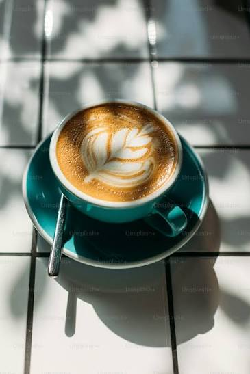

welcome to the coffee shop
➡️OUR SPECIAL ONE

Specialty coffee refers to premium, single-origin beans that score at least 80 out of 100 on the Specialty Coffee Association (SCA) grading scale. It prioritizes ethical sourcing, traceability, and complex, flawless flavor profiles that reflect their unique growing regions. A special cup of coffee is often a visual experience. Skilled baristas will use properly steamed, micro-foamed milk to pour detailed latte art. It is typically served in specific glassware or ceramic cups designed to enhance the aroma of the drink.

Specialty coffee refers to premium, single-origin beans that score at least 80 out of 100 on the Specialty Coffee Association (SCA) grading scale. It prioritizes ethical sourcing, traceability, and complex, flawless flavor profiles that reflect their unique growing regions. A special cup of coffee is often a visual experience. Skilled baristas will use properly steamed, micro-foamed milk to pour detailed latte art. It is typically served in specific glassware or ceramic cups designed to enhance the aroma of the drink.